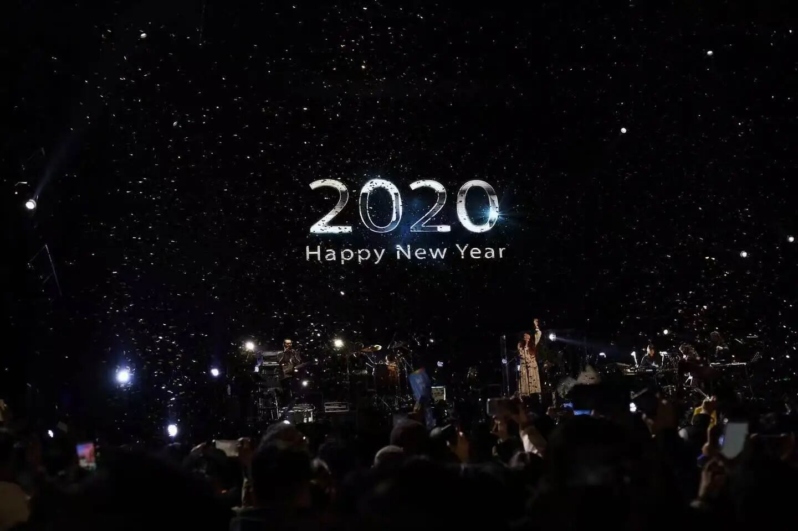
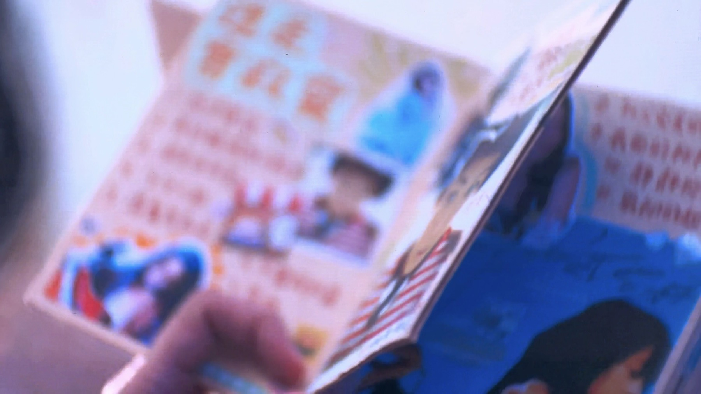
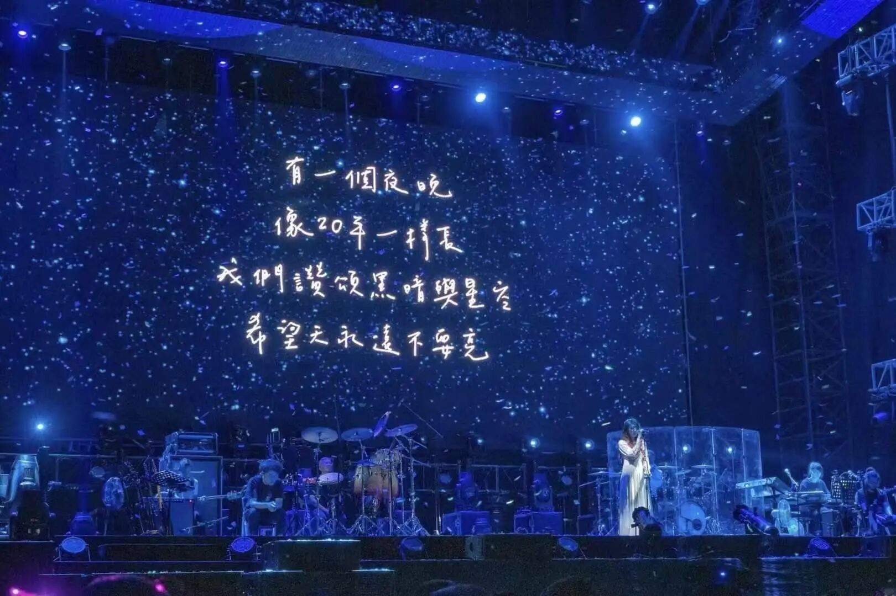

20260905
时隔六年多，再看陈绮贞，又一次泪流满面。
只是站在人群里，听一些早已熟悉的歌，身边没有发生什么特别的事。可当她出现在舞台上，开口唱歌，很多情绪忽然就涌了上来。
后来我想，长大以后再听陈绮贞，听到的已经不只是音乐。
十几岁时，我喜欢她，大概是因为她代表了一种很具体的青年想象。做自己喜欢的事，有自己的趣味和坚持；敏感、内向也不要紧；生活未必要奢华，却可以被认真地安排；在一件事上足够专业，也不急着向所有人解释自己的选择。
那时的我还没有见过太多种生活，也不知道一份工作会怎样慢慢占据人的时间，人与人之间的关系又会如何变化。可我隐约觉得，成为这样的大人是一件很好的事。

20200101
多年以后再看她，最让我动容的，是她还在做音乐。依然是那道轻柔的嗓音。
我当然知道，舞台上的“文艺女青年”形象，来自她多年来的作品、表达和选择，也不等于她生活的全部。但对当年的我来说，那种形象确实打开了一种可能：一个人可以不依靠外部的喧闹来证明自己，也可以把时间放在真正愿意投入的事情上。
这些年，我也有了自己的工作、目标和生活秩序。很多事情比少年时想象得复杂得多。人会开始权衡收入、机会、关系、风险和责任；会在一次次选择里明白，喜欢一件事，并不自动意味着能够以它为生。曾经那些非常纯粹的幻想，也在现实里被调整、被拆解，变得不再那么完整。
所以，站在现场时，我也为一种没能完全抵达的生活流泪。
我后来没有完全过上十几岁时想象的那种日子。或者说，长大以后才明白，那种日子本身就很难原封不动地实现。我们总会被推着往前走，进入新的城市、新的工作、新的关系，在勉强与练习中，学会处理曾经不必处理的现实。
可她还在唱歌。
二十多年过去了，她仍在做那件一直在做的事。舞台上的专注、对作品的投入，以及演出里那些没有被省略的细节，让我突然意识到，原来人并不一定会在时间里失去所有东西。生活会改变一个人的处境，改变她的表达方式，甚至改变她看待世界的角度；可有些真正重要的部分，仍然可以被保存下来，或者说可以坚持下去。
这大概也是眼泪里带着一点安慰的原因。
我也想起那些曾经一起听歌的人。那时我们还很年轻，会把歌词抄在本子上，会认真讨论喜欢的人、想去的城市和未来。也曾有一段时间，十七岁的我们，把《After 17》设成起床闹钟。后来，许多人不再在身边。我们各自进入不同的人生，联系变少，记忆也被新的日常覆盖。
可音乐有一种奇怪的能力。它不需要解释，就能把人带回某个很具体的时刻。听到熟悉的旋律时，我仿佛又看见那个更小一点的自己：她还没有那么擅长分析，也还没有学会把感受放进一个合适的位置。她对世界抱着很多未经验证的期待，也很容易因为一首歌、一句话，或者某个遥远的人生想象而心动。
我原以为，她已经离我很远了。
但那天晚上，我发现她还在。
她没有消失，只是和后来长出来的我一起生活，不常露面。她仍然会被音乐打动，仍然相信认真做好一件事有其意义，仍然会为那些不够功利、也无法立刻换算成结果的东西留出位置。
现场有那么多人，隔着不同的年龄、经历与现实，来到同一片音乐里。有人亲手做了一捧花，还有人做了一本厚厚的手帐，在舞台上被陈绮贞翻阅。我忽然觉得，大家或许都带着一点相似的心情：我们未必还像从前那样轻易相信未来，却仍然愿意为喜欢的事物出门，愿意在一首歌里安静下来，也不把自己的感性当成一件需要遮掩的事。

20260905 现场的手帐
长大以后还会为陈绮贞流泪，并不因为我想回到过去。
更多时候，是在这样的时刻，我仿佛正和过去的自己坐在一起。她提醒我，生活里有目标、责任和计算，也仍然可以留出一部分地方，给音乐，给幻想，给那些暂时没有用途，却让人觉得世界还值得认真对待的东西。
陈绮贞还在唱歌。
而我也还会被她打动。
这已经很好。

20200101